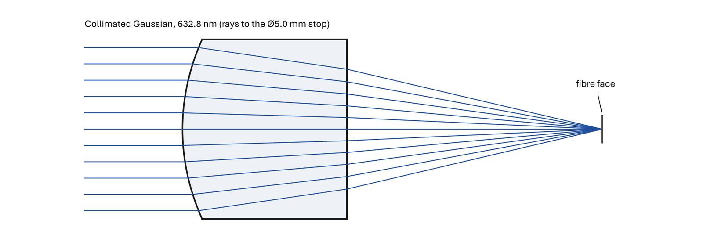
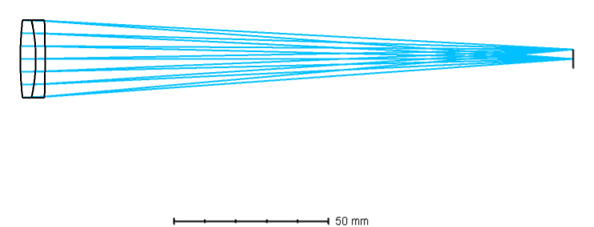
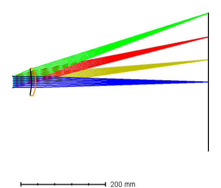
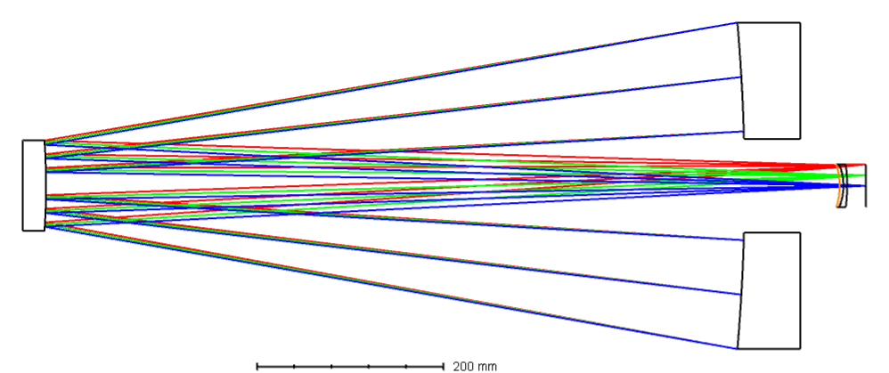

Projects
Optical and photonic design projects, and my PhD research in spectroscopy and imaging.

Laser-to-fibre coupling: single-mode vs multimode
A 632.8 nm beam focused into single-mode and multimode fibres by a moulded asphere, with a 567-point alignment sweep scripted in Python.
MMF 50 / 105 µm core: ±24 / ±52 µm

Achromatic doublet
Visible achromat analysed for spot size, MTF, ray fans and chromatic focal shift in Zemax OpticStudio.
RMS spot 2.5–2.7 µm · focal shift 87 µm

Wollaston landscape lens
Wide-field single-meniscus camera lens with a stop, analysed across four field angles.
RMS spot 96–286 µm

Modified Ritchey–Chrétien telescope
Two-mirror hyperbolic telescope with a refractive element near focus; diffraction-limited across the field.
RMS spot 0.59–0.75 µm vs Airy 7.69 µm

Unbalanced MZIs on SOI
Designed in KLayout with the SiEPIC EBeam PDK, simulated in Lumerical, fabricated by electron-beam lithography and measured.
ΔL 50–500 µm · measured FSR within 4.4% of sim.

CF-LIBS depth profiling, COMPASS tokamak
Calibration-free LIBS depth profiles of the wall-deposited layer after the LiSn liquid-metal divertor campaign.
Nucl. Mater. Energy · 2023

Optically thin plasma for trace boron in water
Finding optically thin plasma conditions to quantify trace boron in levitated water droplets.
Spectrochim. Acta B · 2025

Calibration-free LIBS of mineral waters
First calibration-free quantification of levitated liquids: Na, K, Li, Ca and Mg in three bottled waters.
Spectrochim. Acta B · 2025

DNN and RNN on LIBS spectra
DNN vs GRU and Bi-LSTM for the composition of fusion first-wall materials from 7,400 simulated spectra.
Nucl. Mater. Energy · 2025

Plasma expansion dynamics in levitated droplets
Fast photography of the plasma and shadowgraphy of the levitated droplet, overlapped to measure how much of the droplet is ablated.
Spectrochim. Acta B · 2026

Handheld photometric-stereo 3D imager
Raspberry Pi, camera and RGB LED ring that recover depth maps from 12 differently lit images, validated against a CMM.
6 grades · 85% accuracy on 30 samples
Skills and tools
Optical design
- Zemax OpticStudio (sequential, non-sequential)
- Laser and optical alignment
Photonic ICs
- Lumerical MODE, INTERCONNECT
- KLayout, SiEPIC EBeam PDK
- Corner and Monte Carlo analysis
Spectroscopy
- LIBS and calibration-free LIBS
- Plasma diagnostics: Boltzmann plots, Stark broadening
- Nd:YAG lasers, ICCD detectors, vacuum systems
Software
- Python: scikit-learn, PyTorch, PyQt5
- MATLAB, OpenCV, ImageJ
- Git
Electronics
- PIC16, Arduino, C
- Verilog, SystemVerilog
- PCB design, signal acquisition
Publications
Peer-reviewed journal articles. Full list on Google Scholar and ORCID.
- Nanosecond-LIBS-induced deuterium outgassing, diffusion, and surface modification in tungsten coatingsNuclear Fusion 67 (2027) 016032 · doi:10.1088/1741-4326/aeb81b
- Quantification of eroded Fe contamination in plasma activated water using acoustic levitation assisted laser-induced breakdown spectroscopy by a novel method – multi-line calibration curvePlasma Chemistry and Plasma Processing 46 (2026) 73 · doi:10.1007/s11090-026-10680-6
- Plasma temporal expansion dynamics in droplets by laser-induced breakdown spectroscopy assisted by acoustic levitation (LIBS-AL)Spectrochimica Acta Part B 244 (2026) 107595 · doi:10.1016/j.sab.2026.107595
- Evaluation of DNN and RNN for the determination of the chemical composition of dimensionality-reduced LIBS spectra of fusion-based materialsNuclear Materials and Energy 45 (2025) 101994 · doi:10.1016/j.nme.2025.101994
- Laser-induced breakdown spectroscopy assisted by acoustic levitation (LIBS-AL) for the calibration-free quantification of elements of interest in liquids – Case study of mineral watersSpectrochimica Acta Part B 232 (2025) 107286 · doi:10.1016/j.sab.2025.107286
- Study of optically thin condition for quantification of trace quantity of boron in aqueous sample using LIBS assisted by acoustic levitationSpectrochimica Acta Part B 230 (2025) 107218 · doi:10.1016/j.sab.2025.107218
- Role of oxygen in suppression of boron incorporation in diamond films: Surface reactions insightApplied Surface Science 709 (2025) 163832 · doi:10.1016/j.apsusc.2025.163832
- Depth profile CF LIBS analysis of the wall deposited layer in the COMPASS tokamak after LiSn testing campaignNuclear Materials and Energy 37 (2023) 101547 · doi:10.1016/j.nme.2023.101547
Contact
Open to roles in optical design, photonic integrated circuits and laser spectroscopy.